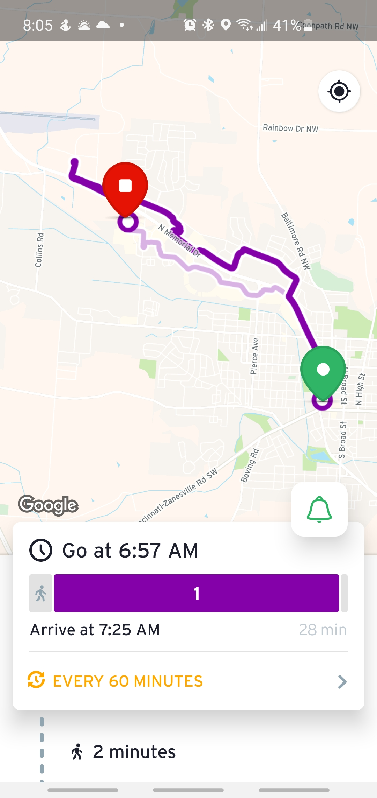

# Custom GTFS Transit Feeds

Malcolm Meyer

2021 Ohio GIS Conference

---
# What is GTFS?
---
> The General Transit Feed Specification (GTFS) is a data specification that allows public transit agencies to publish their transit data in a format that can be consumed by a wide variety of software applications. Today, the GTFS data format is used by thousands of public transport providers.

---

# The Static Feed

---

> A GTFS feed, which contains static transit information, is composed of a number of text (.txt) files that are contained in a single ZIP file. Each file describes a particular aspect of transit information: stops, routes, trips, fares, etc.

---

|Filename|Required|Description|
|-|-|-|
|agency.txt	|Required	|Transit agencies|
|stops.txt	|Required	|Transit Stops and stations|
|routes.txt	|Required |Transit routes and loops|
|trips.txt	|Required	|Specific schedule per route|
|stop_times.txt	|Required|	Arrival and deaprture times|
|calendar.txt	|Conditional|Weekly Scheudle|
|calendar_dates.txt	|Conditional|Schedule Exceptions|

---

# Existing Data

- Stops (Points) stops.txt (route and stop id)
- Routes (Lines) routes.txt (id, name, color)

> The routes do not include the polylines, just the name, color, route ID and calendar ID.

---

Map of Exiting Data

---
## Stop Times and Trips

> How can we create these required fields from our exiting GIS data?

- [Excel Tool from National RTAP](https://www.nationalrtap.org/Technology-Tools/GTFS-Builder)
- Custom NodeJS Script

---

## NodeJS Script

- Manually create the `agency.txt` and `calendar.txt` files 
- Load the GIS points and lines
- Iterate through all the points to create the `stops_times.txt` and `trips.txt`

---

## Issues

> Some lines route through the same stop.

Workaround - create duplicate stop points for each route.

---

Show image of this

---

# Outputs

---

### GTFS Feed
### Web Map
### Accessible Print Map & Schedule

---

# Print Map Example

--- 

# Web Map Example

--- 


---



---

> Google requires a signed contract which has some language which may not be acceptable for some municipalities.

---

# Thanks

Malcolm Meyer

**@getBounds** on twitter and the web